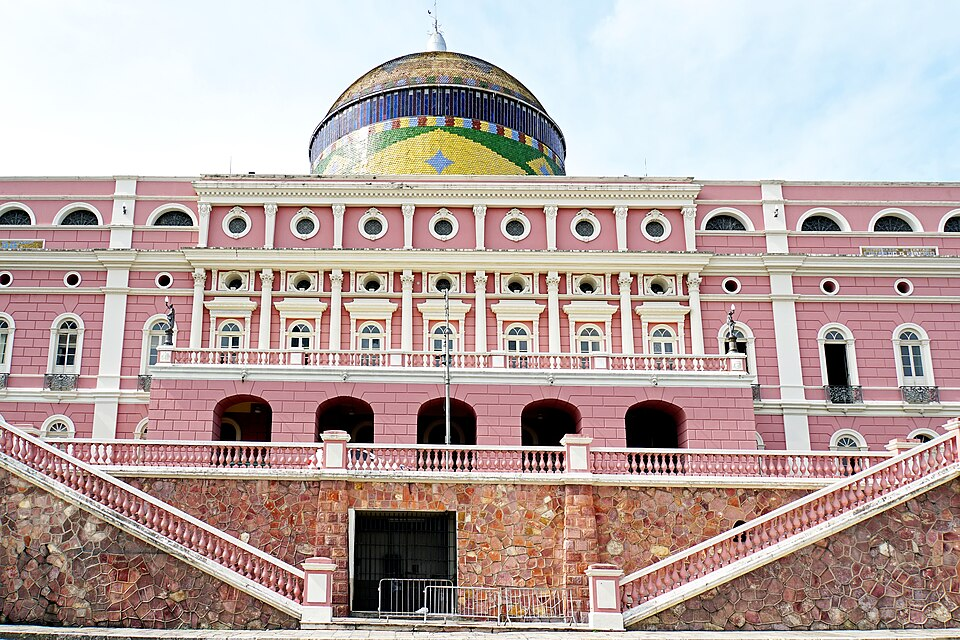
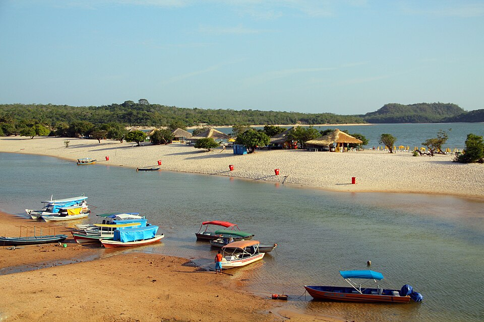

Manaus
Conheça a capital do Amazonas, sua arquitetura, seus mercados e sua vida cultural.
VIVA A EXPERIÊNCIA
Descubra paisagens, sabores e experiências que aproximam você da natureza.

Conheça a capital do Amazonas, sua arquitetura, seus mercados e sua vida cultural.

Uma paisagem fluvial famosa pela confluência dos rios Negro e Solimões.

Destino conhecido pelas praias de água doce e pelas paisagens do rio Tapajós.

Uma região de ilhas fluviais e floresta, ideal para conhecer com operadores autorizados.